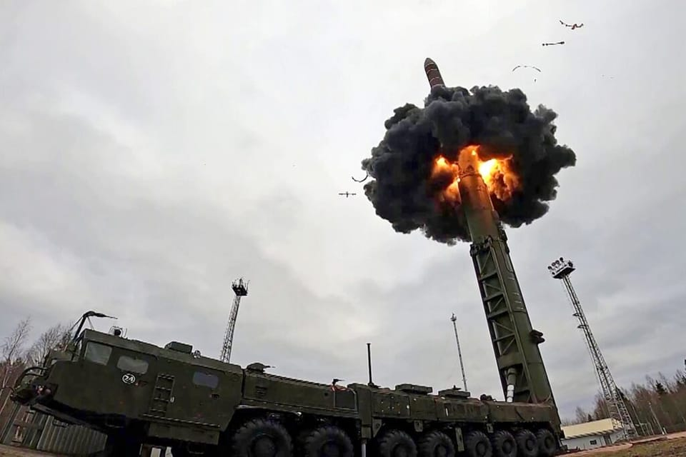

世界苦茶05月20日新闻 | 40条 | 美债收益率升破5%

美债收益率升破5% | 特朗普与普京通电话 | 以色列将控制全部加沙 | 中国房产投资同步大跌 | 中国一男子在台湾桃园插五星红旗
透明茶室
苦茶数据
美元兑人民币：7.21（昨日7.21，前日7.21）
美元兑日元：144.13（昨日145.32，前日145.94）
上证指数：3380（昨日3364，前日3367）
标普500指数：5963（昨日5958，前日5916）
比特币：105022（昨日103111，前日103436）
布伦特原油：65.01（昨日65.13，前日65.41）
中国新闻
• 中国男子韩连环杀人 ：一名中国籍男子涉嫌在韩国京畿道始兴市杀害两人，并持凶器刺伤两人，已被韩国警方逮捕。综合法新社和韩联社报道，京畿道始兴市星期一发生两起伤人事件，警方在追捕嫌犯车某的过程中，牵扯出两桩命案。据报道，车某当天上午刺伤一名60多岁的女性便利店店主，随后逃离现场。警方处理现场后，前往与车某所用车辆相关的车主家中，并在车主家中发现一具似乎已遗弃数日的尸体，相信是车主本人。
• 印度智库认为中国支援巴防空情报 ：印度智库称，印度5月与巴基斯坦发生冲突期间，中国向巴方提供防空和卫星支持，说明北京在冲突中的直接参与程度，高于此前披露的水平。印度联合战争研究中心主任库马尔称，中国帮助巴基斯坦重组巴国雷达和防空系统，以更有效地探测印度的部队和武器部署。在4月22日印控克什米尔地区恐袭案发生后、印巴两国爆发冲突前的15天里，中国还帮助巴国调整对印度的卫星覆盖范围。巴基斯坦承认使用中国提供的武器，但库马尔认为，这意味着北京可能有更进一步的参与，为伊斯兰堡提供了后勤和情报支持。
• 中方未回应防空援巴 ：中国外交部应询时，未正面回应中国是否向巴基斯坦提供防空系统协助。对于彭博社提问印度军方表示中国向巴基斯坦提供了防空系统的协助，中方对此有何评论？中国外交部发言人毛宁星期一在例行记者会上回应时说：“你的具体问题建议向中方的主管部门了解。”毛宁表示，印度和巴基斯坦都是中国的重要邻国，中方十分重视中印、中巴关系，也始终秉持睦邻、安邻、富邻、亲诚惠容、命运与共的理念方针，发展同所有周边邻国的关系。
• 巴外长访华 ：中国官方宣布，巴基斯坦副总理兼外长达尔今起访华，并说达尔此访体现巴方高度重视中巴关系。中国外交部发言人星期一在官网宣布，应中共政治局委员、中国外交部长王毅邀请，巴基斯坦副总理兼外长达尔将于5月19日至21日访华。针对外媒提问巴基斯坦外长此时访华是否与当前紧张的印巴局势有关，还是属于正常的双边交往，中国外交部发言人毛宁星期一在例行记者会上说，巴基斯坦副总理兼外长达尔这次访问体现了巴基斯坦政府对于发展中巴关系的高度重视。
• 王毅会见丹麦外长 ：中国外交部长王毅与到访的丹麦外长拉斯穆森会谈时表示，期待丹麦为推进中欧关系健康发展发挥积极作用，并称中方在格陵兰问题上充分尊重丹麦的主权。据中国外交部官网消息， 中共政治局委员、中国外交部长王毅星期一在北京同赴华访问的丹麦外交部长拉斯穆森举行会谈。王毅说，丹麦是最早承认并同中华人民共和国建交的西方国家之一。双方应秉持建交初心，以庆祝建交75周年为契机，保持高层交往，增进政治互信，推动中丹关系取得更大发展。
• 大陆男子插旗台桃园 ：一名中国大陆男子据称乘坐橡皮艇抵达台湾并在沙滩插上五星旗。台湾海巡署回应台媒查询时说，此案还在厘清中。根据台湾《联合报》的报道和网上流传的视频和图片，这个名叫“山东凯哥”的男子坐在橡皮艇称，他梦到玉皇大帝和妈祖交给他一个任务，要他前往台湾送一道圣旨。男子决定完成这个任务，也希望能够平安回家。视频也显示，男子抵达了桃园，并出现男子现身沙滩和五星旗插在沙滩上的画面。这名男子称，他在福州长乐机场海滩下海，并将五星旗插在台湾土地上。
• 武汉夜市疑似枪案 ：中国湖北武汉一个夜市星期天据报发生枪击案，至少两人中枪。官方目前尚未通报此案。香港《星岛日报》报道，外网5月18日晚间流出多个影片，指在湖北武汉硚口区崇仁街爱国社区，当晚10时左右一个烧烤摊档发生枪击，有人持枪射击在户外的食客。有网民称，事发时枪手至少开了四枪，造成两人死亡，行凶后逃去。网传影片显示，枪击后现场布满血渍及杂物，一名坐在椅上的男子头部后仰失去知觉。有目击者称，椅上男子头部中枪，当场死亡。另一中枪男子则倒在地上，同样伤重死亡。
• 疫情或将5月底达峰 ：中国专家李侗曾受访时称，中国冠病疫情预计将在5月下旬达到顶峰。据湖南日报新媒体新湖南星期天报道，首都医科大学附属北京佑安医院感染综合科主任医师李侗曾接受《中国经营报》访问时说，本轮冠病疫情自3月份开始，已持续近三个月，属于一次正常的波动。从近几年情况看，冠病疫情一般半年到一年会有一个流行高峰，预计这波疫情将在5月下旬达到顶峰。针对近期冠病阳性率升高的具体原因，李侗曾解释，一方面是很多人距离上次感染已超过半年，自然感染产生的抗体逐渐减弱或消失；另一方面是病毒持续变异，尤其是奥密克戎毒株的XDV亚分支NB.1.8.1，其免疫逃逸能力明显增强。此外，“五一”假期人员密集流动也是促使病毒传播加速的因素之一。
亚太印太新闻
• 台车祸16伤4命危 ：台湾一辆车子星期一下午在新北一所小学附近冲撞路人，造成16人受伤，其中四人命危。综合台湾《联合报》《自由时报》报道，车祸发生在下午4时，地点为新北市三峡区，正值学校放学尖峰时间。警方、消防陆续赶往现场救援，车祸肇因仍待调查厘清。司机是一名七旬老翁，车子不知何故冲撞多名路人。根据新北市消防局初步讯息，车祸造成16人受伤，其中四人命危，紧急送医。
• 特朗普公司考察越南 ：越南政府的一份文件显示，美国总统特朗普的公司正考察在胡志明市建设特朗普大厦的项目，他的儿子埃里克·特朗普预计本周访问越南。路透社星期一引述越南外交部内部文件报道，胡志明市官员受邀参加星期四晚上在市中心一家酒店举行的晚宴，主角是特朗普集团高级副总裁埃里克·特朗普，他是特朗普的次子。这份文件的日期是上星期四，由外交部在胡志明市的部门代理负责人签署。文件显示，特朗普集团代表将访问胡志明市中心的一个高档区域，届时将考察特朗普大厦拟建地点，并希望与市领导就这个项目举行工作会谈，也会邀请地方当局及商业代表团合作。
• 朝鲜改统一阁名称 ：韩国当局说，平壤已将韩朝边境板门店朝鲜一侧的重要会谈场所统一阁，更名为“板门馆”，可能显示朝方正加速推行去统一政策。韩联社报道，韩国统一部发言人具炳衫星期一说，统一部确认朝鲜去年8月将统一阁更名为板门馆，并挂出新匾额。具炳衫指出，朝鲜去年起基于“敌对两国关系论”，在各方面加速推进去统一政策，给统一阁改名可能是相关举措之一。
• 印尼查涉油腐案 ：印度尼西亚当局已联系多家新加坡石油贸易公司，要求协助调查涉及印尼国家石油公司的160亿元腐败案。彭博社星期一引述多名收到或看到相关信函的人士报道，几家新加坡石油贸易商本月早些时候收到印尼国家石油公司发送的通知，要求他们协助印尼总检察长办公室，回答公司整体治理和过往交易等问题。印尼方面此前曾邀请新加坡石油贸易商前往雅加达配合查案，但知情人士说，最新的通知明确指出，面谈会在新加坡贪污调查局进行。
• 日本政府开始实施涉密“安全审查制度”： 日本从16日起开始实施 “安全审查制度”。根据该制度，政府掌握的、一旦泄露可能会危害日本国家安全的信息将被指定为“重要经济安保信息”，包括民营企业员工在内，仅限通过政府可靠性审查的人员接触。预计适用信息范围包括：应对网络攻击威胁的措施、日本优势技术的相关信息、高度依赖进口的重要物资供应链信息等。泄露相关信息将面临最高5年的监禁处罚以及最高500万日元的罚款。此外，政府还将在本人同意的前提下对将接触信息的人员开展背景调查，内容包括国籍、学历、工作经历、犯罪记录、过去十年内是否接受过精神疾病的治疗或心理咨询以及是否发生过酒后纠纷等。
科技新闻
• Coinbase纳入标普500 ：美国最大加密货币交易平台Coinbase在美国总统特朗普政府大力推动加密货币的背景下，已进入美国金融主流。5月19日美市开市前，它会成为标准与普尔500指数的成员股。市场认为，加密货币回流美国是必然，但Coinbase依然非常重视亚太地区，尤其是新加坡，主要看中的是稳定币市场。Coinbase亚太区域董事总经理奥洛克伦最近在新加坡视察业务时接受《联合早报》专访，畅谈公司在本区域的现状与未来，以及业务发展方向。
• 微软展示AI智能体 ：微软公司构想了一个未来：全球用户将通过AI智能体完成从编码到操作Windows系统的所有任务。这家公司周一在西雅图举行的年度Build大会上阐述了这一愿景。微软称，约23万家企业已在使用其Copilot Studio开发自己的定制AI智能体。该公司预计，到2028年企业将推出13亿个智能体。微软公司在周一的大会上展示了多款AI智能体应用，包括用于帮助开发者为 Microsoft 365 构建代理的 Microsoft 365 Agents Toolkit、协助开发者编写代码的 GitHub Copilot 编程智能体和AI智能体直接连接Windows原生应用的功能。
• 苹果因LGBT被俄罚款 ：俄罗斯莫斯科塔甘斯基地区法院依据另外两项涉及LGBT运动宣传的诉讼程序，对苹果分销国际有限公司处以罚款。该运动在俄罗斯已被认定为极端主义组织并遭禁止。法院裁定：“根据两份行政处罚决定书，苹果公司分销国际有限公司应分别缴纳 250万卢布行政罚款。”本周一早些时候，该法院已就同类违法行为对苹果公司处以 250万卢布罚款，至此罚款总额已达 750万卢布。这是苹果公司首次在俄罗斯因宣传非传统价值观承担法律责任。本次听证会采取闭门形式进行，因苹果公司代表表示庭审可能涉及服务运营相关机密数据及其他企业保密信息。
• 英伟达或投量子公司 ：知情人士透露，英伟达正就投资量子计算初创公司PsiQuantum进行深入谈判。总部位于帕洛阿尔托的PsiQuantum在由贝莱德领投的一轮融资中筹集了至少7.5亿美元，投前估值为60亿美元。与许多依赖非常规材料的量子初创公司不同，该公司使用光子作为量子比特，并利用标准半导体制造方法。此举将标志着英伟达首次直接投资于构建物理量子计算机的公司，代表其战略重心从之前以人工智能为中心的企业发生了转变。
• 日便利店试推机器人 ：日本便利店为提升销售业绩正在加强配送业务。在人手短缺日益严重的背景下，使用配送机器人投递商品的尝试也正逐步展开。日本7-Eleven自19日起，在东京都八王子市的两家门店推出机器人配送服务。顾客通过专用应用下单后，店员完成商品装载作业，然后由机器人前往指定地点送货。这种机器人配备了传感器等装置，可识别道路高低差和交通信号，在无人驾驶的情况下自主前往配送地点。这项服务已获当地警方许可，机器人可在公路上移动。这是日本大型便利店首次采用无人配送机器人配送商品。
• 黄仁勋宣布建新总部 ：美国英伟达执行长黄仁勋星期一宣布，将在台北的北投士林科技园区建设新的办公大楼。综合台湾《经济日报》《自由时报》和壹苹新闻网报道，黄仁勋在台北国际电脑展宣布这项信息，并说英伟达在台湾的工程人力持续扩张，现有办公空间已不敷使用，为此公司决定打造全新办公大楼“NVIDIA Constellation”，作为未来人工智能研发与技术合作的据点。黄仁勋笑称，公司在多个城市寻找新址期间，各地市长都非常热情，但经过慎重评估后，最终决定落脚在北投士林。
• 任天堂转向三星制造芯片 提升Switch 2产量： 任天堂公司已转向三星电子公司，委托其制造Switch 2游戏机的主芯片。此举可能有助于任天堂提高该游戏机的产量，使其在截至2026年3月的财年里销售超出预期的2000多万台。知情人士称，该决定标志着三星的一次关键胜利，该公司正试图与台积电竞争为全球电子产品代工芯片。知情人士透露，三星正使用其八纳米工艺为 Switch 2 制造一款由英伟达公司设计的定制芯片。当前的生产进度应该足以让任天堂在明年三月前出货超过2000万台游戏机。如果有需要，三星还可以进一步提升产能，不过这在很大程度上将取决于富士康等硬件组装商的生产能力。
财经新闻
• 中方批美围堵晶片 ：美国政府加大力度遏制中国晶片发展后，中国商务部批评，这种以单边保护主义手段，妄图围堵其他国家的做法，终将损害美自身产业竞争力，“给别人下绊子，不会让自己跑的更快”。中国商务部星期一在官网以发言人答记者问回应有关美国的晶片出口管制措施。记者提问，美国商务部网站调整了其5月12日发布的AI晶片出口管制指南新闻稿相关表述，将“在世界任何地方使用华为昇腾晶片均违反美国出口管制法规”调整为“警告业界使用中国先进计算机晶片，包括特定华为昇腾晶片的风险”。请问中方对此有何评论？
• 英欧达成新协议 ：英国与欧盟达成脱欧后最重大的关系重置协议，双方同意取消部分贸易壁垒并加强防务合作，以促进经济增长，提升欧洲大陆安全。英国首相斯塔默星期一与欧盟领导人召开2020年正式脱欧以来的首次英欧峰会。法新社引述欧盟外交官报道，成员国已批准计划在这次峰会上签署的三份协议文本，分别涉及安全与防务合作、英欧团结声明，以及在贸易、渔业和青年流动等议题上的共同谅解文件。预计双方会在星期一晚些时候正式公布协议。
• 小米宣布晶片投资 ：中国科技巨企小米集团创办人雷军在社交平台发文称，公司将在10年投资500亿人民币研发晶片。小米代表对路透社说，公司的10年、500亿元晶片研发投资从今年启动。雷军星期一在个人微博账号写道，今年是小米创业15周年，公司早在2014年就开始晶片研发之旅。小米首款手机晶片“澎湃S1”2017年正式亮相，后来因为种种原因遭遇挫折，暂停了SoC大晶片的研发，但保留了晶片研发的火种，转向了“小晶片”路线。之后，包含快充晶片、电池管理晶片、影像晶片、天线增强晶片等小米澎湃各种“小晶片”陆续面世，在不同技术赛道中慢慢积累经验和能力。雷军介绍，小米2021年初做了一个重大决议，要造车。同时还做了另一个重大决策，要重启“大晶片”业务，重新开始研发手机SoC。
• 美债收益率升破5% ：受穆迪下调美国主权信用评级影响，30年期美国国债收益率星期一早盘短暂升破5%，触及市场关注的关键心理关口，反映出投资者对美国财政前景的担忧。评级机构穆迪在上星期五美国闭市后宣布，将美国主权信用评级从最高的“Aaa”下调一级至“Aa1”，理由是美国财政赤字不断扩大，以及联邦债务负担沉重。继惠誉和标普全球之后，三大主要评级机构现均已未将美国主权信用列为最高等级。此次评级下调正值美国国会继续讨论新一轮减税计划之际，而这些计划多数缺乏明确的资金来源。与此同时，总统特朗普打破长期以来的贸易伙伴关系，并重新谈判协议，也使美国经济面临下行风险。
• 统计局谈低物价影响 ：中国国家统计局说，目前物价处在低位，影响居民的就业增收，因此接下来将继续发挥宏观政策组合效应，促进价格合理回升。据中国网报道，中国国家统计局新闻发言人、国民经济综合统计司司长付凌晖星期一在新闻发布会上说，当前物价总体处在低位，这会对企业生产经营带来压力，影响居民的就业增收，因此推动价格合理回升很重要。他指出，下阶段要继续发挥宏观政策的作用，进一步扩大投资需求；推进供给侧改革，改善经济循环，持续规范市场秩序，促进价格合理回升。
• 穆迪评级引市场动荡 ：穆迪下调美国主权信用评级，受此影响，星期一美元走弱，美国股指期货下跌，金价上涨。国际信用评级机构穆迪在上星期五美国闭市后宣布，将美国主权信用评级从最高的“Aaa”下调一级至“Aa1”，理由是美国财政赤字不断扩大，以及联邦债务负担沉重。此举引发市场对美国财政前景的担忧，避险情绪升温。截至新加坡时间上午11时零1分，美国标普500与纳斯达克100指数期货分别下跌0.84%和1.1%。金价期货上涨1.3%，至每安士3229美元。美债收益率变化不大，10年期为4.5%。
• 房产投资同比下滑 ：官方数据显示，中国今年首四个月的房地产开发投资同比下跌10.3%。中国国家统计局官网星期一公布上述数据。今年首三个月的房地产开发投资则滑落9.9%。新建商品房销售面积则从1月至3月的3.0%，收窄至1月至4月的下降2.8%。房屋新开工面积则从1月至3月的下跌24.4%，稍微收窄至下降23.8%。
• 新房售价连两月持平 ：中国官方最新数据显示，中国新房售价连续两个月持平，近两年未见增长。根据中国国家统计局星期一在官网发布的数据，中国4月一线城市新建商品住宅销售价格环比由上月上涨0.1%转为持平。二线城市新建商品住宅销售价格环比持平，与上月相同。三线城市新建商品住宅销售价格环比下降0.2%，降幅与上月相同。路透社根据中国统计局最新数据计算的结果显示，中国新房售价自2023年5月以来，未见增长。
• 美财长回应评级担忧 ：美国财政部长贝森特淡化围绕美国政府债务，以及关税对沃尔玛等企业通胀影响的担忧。贝森特星期天接受美国全国广播公司的访问时被问及穆迪上星期五下调评级时，贝森特说：“穆迪是一个滞后指标——这就是每个人对信用评级机构的看法。”他说：“我们不是在过去100天里走到这一步的，我们继承的是前总统拜登政府和过去四年的支出政策，我们决心降低支出，促进经济增长。”
• 特朗普称中国和沃尔玛应该“承担关税”，而不是涨价： 美国总统唐纳德·特朗普周六在社交媒体上猛烈抨击沃尔玛，称这家零售巨头应该承担其关税带来的额外成本。特朗普在提高进口税的同时，试图向持怀疑态度的公众保证，外国生产商将支付这些税款，零售商和汽车制造商将承担额外费用。大多数经济分析人士对这些说法深表怀疑，并警告称，贸易惩罚措施将加剧通胀。沃尔玛周四警告称，从香蕉到儿童汽车座椅等所有商品都可能涨价。特朗普在其“真相社交”帖子中猛烈抨击了这家在美国拥有160万名员工的零售商。他表示，这家总部位于阿肯色州本顿维尔的公司应该为了他的经济议程而牺牲利润，并表示他的经济议程最终将为美国制造业创造更多就业机会。
• 零售增速放缓 ：中国官方最新数据显示，中国4月规上工业增加值和社会零售总额增速放缓。中国国家统计局星期一在官网发布的数据显示，中国4月规模以上工业增加值同比实际增长6.1%，较3月份的7.7%增速回落1.6个百分点。不过，这一数据仍高于路透社对24名经济分析师做的调查预估5.5%增长。中国1至4月规模以上工业增加值同比增长6.4%。在社会消费品零售总额方面，中国统计局数据显示，中国4月社会消费品零售总额37174亿元人民币，同比增长5.1%，低于3月的5.9%增长。经济分析师预计，中国4月社会消费品零售总额增长5.5%。 （翻评：3月和4月都大幅下修去年的数据，以维持社会零售品增长，如果不修订去年4月数据，社零增长是4.1%。）
俄乌战争
• 特朗普俄乌欧洲通话 ：特朗普5月19日分别与普京、泽连斯基以及多位欧洲领导人通话。他表示俄乌将立即开始停火谈判。特朗普说，他相信普京对想要和平是认真的，条件将由双方协商确定，因为他们知道其他人不知道的谈判细节。梵蒂冈已表示“非常乐意主持谈判”。普京表示，在“富有信息且非常坦率的”对话后，俄罗斯准备继续讨论结束战斗，交战国应“找到适合各方的妥协方案”。俄罗斯将提议并准备和乌克兰合作起草一份备忘录，概述未来可能的和平协议框架。但普京强调，俄罗斯的立场是明确的，对俄方最重要的就是“消除这次危机的起因”。泽连斯基说，他向特朗普重申了乌方愿进行全面、无条件停火的立场，已准备好“以任何能产生结果的形式”与俄罗斯进行直接谈判。他呼吁美欧继续施压俄方以促成“真正和平”，美国和欧洲的代表应在“一定程度”上参与谈判过程。泽连斯基还强调，乌方不会在领土问题上妥协，不会从其领土撤军。
• 罗马尼亚指控俄干预 ：罗马尼亚政府今天表示，发现在Telegram及其他社群媒体平台上如病毒般疯传的假新闻歪风，目的是要影响选举过程。罗马尼亚外交部发言人在X平台发文表示：“罗马尼亚进行中的总统选举期间，我们再一次看到俄罗斯干预的明证。”在此之前，即时通讯社媒平台Telegram创始人杜罗夫在发文中没有点名地指控法国试图干预这场选举。罗马尼亚总统大选决选今天登场，由极右疑欧派候选人西米翁与中间派独立候选人达恩对决，选举结果可能影响陷入困境的罗马尼亚经济和欧盟的团结。罗马尼亚宪法法院去年以俄罗斯介入总统大选为由，裁定首轮投票无效，并禁止胜出的极右翼候选人乔吉斯古参选。
其他新闻
• 以色列放粮防加沙饥荒 ：以色列总理办公室说，在面临越来越大的压力要求解除两个多月前实施的全面封锁后，以色列将允许“基本数量”的粮食进入加沙地带。法新社报道，以色列总理内坦亚胡办公室星期天说，在军方建议下，“以色列将批准一定数量的基本食品进入加沙，以确保该地不会出现饥荒危机”。声明指出，若加沙发生饥荒，恐将危及以色列的新一轮军事行动。以方也强调将“采取行动防止哈马斯夺取人道援助”。以色列自3月2日起实施封锁，旨在迫使哈马斯作出让步。但联合国机构已多次警告，加沙正面临食物、清洁饮水、燃料和药品的严重短缺。
• 以色列称将控加沙 ：以色列总理内坦亚胡说，以色列将全面控制加沙，并称允许一定数量食物进入加沙是出于外交考量，不能让当地陷入饥荒。综合新华社和法新社报道，内坦亚胡星期一发布视频声明说，以军在加沙开始大规模战斗，并且正在取得进展。他表明：“我们将控制加沙地带的全部领土。”以色列总理办公室星期天发声明说，在军方建议下，以色列将允许一定数量的食品进入加沙，以确保当地不会出现饥荒，危及以色列新一轮军事行动。声明也强调，以色列会采取行动，防止哈马斯夺取人道主义援助。
• 特朗普调查哈里斯 ：美国总统特朗普说，他要对2024年总统竞选对手哈里斯拉名人背书一事，展开重大调查。法新社报道，特朗普星期一在社媒平台“真相社交”上发贴，炮轰民主党前副总统哈里斯在去年的总统竞选活动中找明星站台的举动。他提到歌坛巨星碧昂斯、主持人奥普拉，以及美国摇滚乐传奇歌手斯普林斯汀等大咖，质问哈里斯给了这些人多少报酬。
• 埃尔多安握指引争议 ：土耳其总统埃尔多安在欧洲政治共同体峰会上，与法国总统马克龙握手后，紧抓对方的中指超过10秒。这段视频在网上疯传，有网民认为埃尔多安借此展现权威。这一幕发生在上星期五阿尔巴尼亚首都地拉那举行的欧洲政治共同体峰会，多国领袖齐聚一堂，就乌克兰战争、欧洲安全与区域合作等议题展开会谈。马克龙当时主动上前向坐着的埃尔多安打招呼，并轻拍对方的手致意，但埃尔多安后来紧握住马克龙的中指，马克龙在挣脱几秒后才抽出手指。两人之后微笑收场，似乎化解尴尬。
• 葡选举极右翼崛起 ：葡萄牙5月18日举行议会选举。现任总理蒙特内格罗领导的中右翼的民主联盟赢得89个席位，相较上次增加9个，但仍未获绝对多数。极右翼政党“够了”党和中左翼社会党均获得58个席位，其中“够了”党比上次增加8个，社会党减少20个。社会党领袖佩德罗·努诺·桑托斯表达辞意。
• 美铁路工达协议复工 ：美国新泽西州的铁路工程师罢工三天后，与公司就加薪达成初步协议，列车将恢复运营。路透社报道，协议细节尚未立即公布。这个协议仍需工会多数成员批准，而工会成员上个月否决先前的一项协议。州长墨菲在宣布这个协议的记者会上说：“这对劳工来说是个好结果，对新泽西捷运公司也是个好结果，对我们的纳税人和通勤者来说同样是个好结果。”
• 就在墨西哥网红直播遭枪杀几天后，哥伦比亚一名模特遭谋杀，引发了人们对杀害女性行为的谴责： 哥伦比亚一名22岁模特兼网红的遇害事件在全国引起轩然大波，并与上周一名墨西哥网红被杀事件相提并论，凸显了拉丁美洲高比例的杀害女性行为。据哥伦比亚司法部国家性别委员会主席玛格达·维多利亚·阿科斯塔称，5月15日，哥伦比亚东北部城市库库塔的大学生玛丽亚·何塞·埃斯图皮南被杀害。阿科斯塔在新闻发布会上表示，嫌疑人伪装成送货员，在埃斯图皮南家中开门时开枪将其击毙。